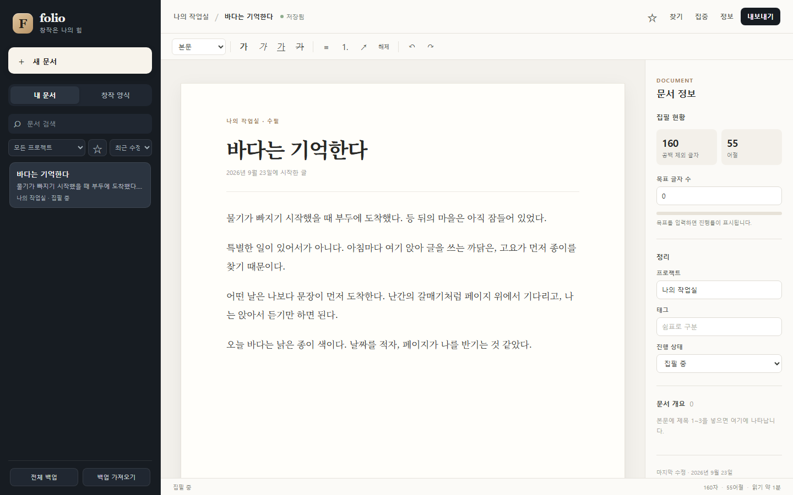

문장을 다듬는 도구
제목과 본문 서식, 목록과 링크, 실행 취소까지. 원고의 구조와 리듬을 한자리에서 다듬습니다.
THE WRITER'S SPACE
생각이 머무는 자리에서, 한 편의 글이 시작됩니다. Folio는 구상부터 퇴고까지 이어지는 창작자용 문서 편집기입니다.
33개 양식 · 9개 카테고리 · 기기 내 자동 저장

첫 줄을 시작할 때도, 긴 원고를 다듬을 때도. Folio는 생각을 붙잡고 글을 이어 가는 일에 필요한 공간을 내어 줍니다.
제목과 본문 서식, 목록과 링크, 실행 취소까지. 원고의 구조와 리듬을 한자리에서 다듬습니다.
프로젝트와 태그, 진행 상태로 원고를 정리하세요. 검색과 즐겨찾기로 다시 열 글도 빠르게 찾습니다.
글자 수와 목표, 문서 개요를 보며 방향을 잡고, 집중 모드에서 문장에만 몰입할 수 있습니다.
글은 내 컴퓨터에 남습니다. 자동 저장과 전체 백업·복원으로 원고를 지키고, TXT·Markdown·HTML 파일로 내보낼 수 있습니다.
9개 카테고리에 담긴 33개의 양식. 글에 맞는 질문으로 생각의 윤곽을 잡고, 구상과 초고 사이의 거리를 줄여 보세요.
양식은 시작점입니다. 완성된 원고는 자유롭게 고쳐 쓸 수 있습니다.
생각이 떠오른 순간부터 한 편의 원고로 남을 때까지, Folio 안에서 자연스럽게 이어집니다.
자유롭게 새 글을 열거나, 글의 종류에 맞는 양식을 고릅니다.
양식에서 다듬은 생각을 원고로 옮겨, 흐름을 끊지 않고 써 내려갑니다.
자동 저장된 글을 다시 다듬고, 원하는 형식의 파일로 내보냅니다.
YOUR STORY STARTS HERE
Folio 2.0을 열고 첫 줄을 적어 보세요. 창작은 나의 힘.
Windows x64에서 설치형 파일을 실행하거나 포터블 파일을 내려받아 실행하세요. 두 파일 모두 위의 다운로드 영역에서 받을 수 있습니다.
아니요. 계정 없이 글쓰기를 시작할 수 있습니다.
작성한 글은 이 컴퓨터에 자동 저장됩니다. 전체 원고를 JSON으로 백업하거나, 개별 글을 TXT·Markdown·HTML 파일로 내보낼 수 있습니다.
네. 양식은 출발점입니다. 원고로 만든 뒤에는 제목과 본문을 자유롭게 고쳐 쓸 수 있습니다.